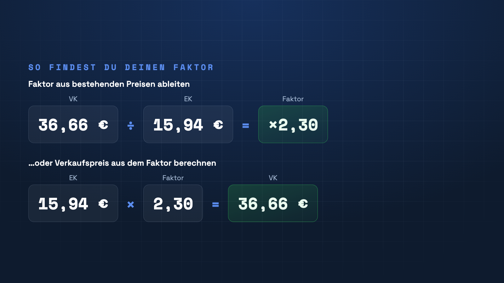

Der Kalkulationsfaktor ist die einfachste Art, Verkaufspreise zu bestimmen: Einkaufspreis × Faktor = Verkaufspreis. Die Kunst liegt darin, den richtigen Faktor zu finden – hier erfährst du, wie.

Was ist der Kalkulationsfaktor?
Der Kalkulationsfaktor ist eine einzige Zahl, mit der du den Einkaufspreis multiplizierst, um zum Verkaufspreis zu kommen. Er bündelt alle Aufschläge – Kosten, Gewinn und Steuer – in einem Wert. Ein Faktor von 2,3 bedeutet: Der Verkaufspreis ist das 2,3-Fache des Einkaufspreises.
Faktor aus bestehenden Preisen ableiten
Wenn du schon Verkaufspreise hast, rechnest du rückwärts: Faktor = Verkaufspreis ÷ Einkaufspreis. Beispiel: 36,66 € ÷ 15,94 € = ×2,30. So findest du heraus, mit welchem Faktor du bisher tatsächlich kalkuliert hast – oft ist der über das Sortiment sehr uneinheitlich.
Faktor aus deinen Kosten aufbauen
Sauberer ist es, den Faktor aus den echten Kosten herzuleiten: Schlage auf den Einkaufspreis deine Handlungskosten, deinen Gewinnzuschlag und – bei Bruttopreisen – die Mehrwertsteuer auf. Das Ergebnis geteilt durch den Einkaufspreis ergibt deinen Mindestfaktor. Alles darunter bedeutet Verlust.
Ein Faktor oder viele?
Ein einheitlicher Faktor ist schnell, passt aber selten für alle Warengruppen. Produkte mit hohem Handling oder geringem Wareneinsatz brauchen einen höheren Faktor. Lege den Faktor daher pro Kollektion oder sogar pro Produkt fest – nicht pauschal fürs ganze Sortiment.
Faktor setzen – automatisch in Shopify
PriceCalc Pro speichert deinen Kalkulationsfaktor pro Variante, leitet ihn bei Bedarf aus bestehenden Preisen ab und berechnet den Verkaufspreis direkt in Shopify.
PriceCalc Pro ansehen →